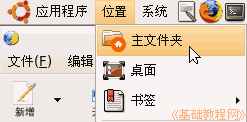
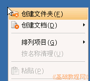
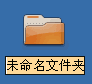
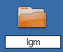
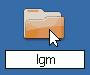

电脑操作基础
作者：TeliuTe 来源：基础教程网
在电脑中一般要给自己建一个文件夹，把自己的文件都放在这里面，这样容易查找，也不容易丢失，下面我们来看一个练习；
1、打开主文件夹
1）在上面板栏中点菜单“位置－主文件夹”，打开自己的主文件夹窗口；

2）在文件夹空白处点右键，选择第一个“创建文件夹(F)”命令；
3）这时出来一个文件夹，名称那儿是黄色的，按退格键删除里面的“未命名文件夹”，

然后输入自己姓名的拼音，输好后再用鼠标点一下上面的图标，这样一个自己名字的文件夹就建好了；
 
这儿也可以输汉字，点击右上角的输入法图标，选择一个拼音输入法，输入自己的名字就可以；
4）在图标上双击左键，进入文件夹里看一下，由于是新建的文件夹，里头还是空的，后面我们会逐渐保存自己的文件；本节学习了在Ubuntu中新建文件夹的基本方法，如果你成功地完成了练习，请继续学习下一课内容；
本教程由86团学校TeliuTe制作|著作权所有，商业用途请与作者联系
基础教程网：http://teliute.org/
美丽的校园……
转载和引用本站内容，请保留作者和本站链接。